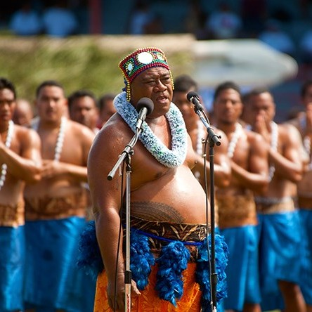
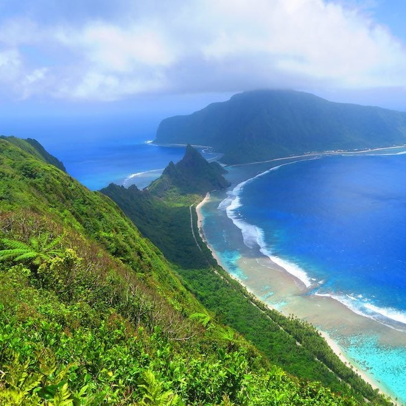

Somoa
From Apia's Cultural Riches to the Majestic Waterfalls of Upolu
My Samoan odyssey commenced in Apia, the capital city and cultural heart of Samoa. The lively streets of Apia buzzed with activity, offering a glimpse into daily life on the islands. The warmth of the Samoan people was evident as they shared tales of their heritage, traditions, and the significance of "fa'a Samoa," the Samoan way of life.
 My journey took me to the Papaseea Sliding Rocks, a hidden gem in the lush jungles of Upolu. Trekking through the rainforest, I reached these natural waterslides formed by smooth rock formations and cascading water. Sliding down the rocks and plunging into refreshing pools was an exhilarating experience that brought out the adventurer in me.
From Papaseea, I ventured to the iconic To Sua Ocean Trench, a geological wonder of Samoa. Descending a steep ladder, I arrived at the mouth of this massive sinkhole filled with crystal-clear seawater. Swimming in To Sua's tranquil depths, surrounded by lush greenery and the sounds of nature, was a serene and surreal experience.
Exploring Upolu further, I discovered the Piula Cave Pools, a series of freshwater springs nestled within limestone caves. The cool, clear waters of the cave pools provided a peaceful respite from the tropical heat. Floating on my back, gazing at the natural skylights above, I was enchanted by the beauty of this subterranean oasis.
 My journey led me to the Afu Aau Waterfalls, where I embarked on a hike through dense rainforest to reach these cascading wonders. The vibrant greenery and the sound of rushing water created a symphony of nature. Swimming in the plunge pools beneath the waterfalls offered a refreshing escape, and the sensation of being surrounded by tropical flora was awe-inspiring.
Samoa is renowned for its pristine beaches, and Lalomanu Beach is a true gem. The soft, powdery sands and the calm, turquoise waters beckoned for relaxation. Watching the sunset paint the sky in hues of orange and pink while lounging on the beach was a moment of pure serenity.
Venturing to Savai'i, Samoa's largest island, I embraced the island's rugged beauty. Exploring the Saleaula Lava Fields, remnants of a volcanic eruption, I marveled at the barren yet hauntingly beautiful landscape. Standing amidst the solidified lava flows, I felt the power and unpredictability of nature.
As I reflect on my journey through Samoa, I am struck by the country's pristine natural beauty, rich cultural traditions, and the warmth of its people. From Apia's cultural riches to the exhilaration of sliding down Papaseea's rocks, from the enchantment of To Sua's ocean trench to the serenity of Piula's cave pools, and the breathtaking Afu Aau waterfalls to the tranquil Lalomanu Beach, and the rugged landscapes of Savai'i, Samoa is a Polynesian paradise that continues to captivate and inspire.
Join me in my future travels as I continue to explore the captivating regions of Asia and Oceania, each offering its own unique blend of beauty and cultural richness. Until next time, keep your wanderlust alive and your heart open to the wonders of the world. Fa'afetai tele lava!